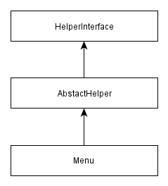
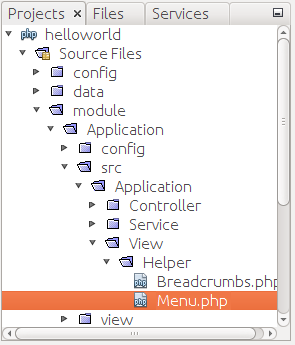

6.9. Writing Own View Helpers
Earlier in this chapter, we've created the layout common to all pages of the web site. But we still have a couple of things to do to make the layout fully functional. If you remember, the layout template contains the navigation bar and breadcrumbs. But both navigation bar and breadcrumbs interface components provided by Twitter Bootstrap are currently "static", while they need to be more interactive.
For example, the active item of the navigation bar should depend on the controller's action that is being executed at the moment. And the breadcrumbs should display the path to the currently viewed page. In this section we will make these widgets completely ready for the website with the help of our own view helpers.
A typical view helper is a PHP class deriving from
Zend\View\Helper\AbstractHelper base class, which in turn implements the
Zend\View\Helper\HelperInterface interface (class inheritance diagram is presented in
figure 6.9).
 Figure 6.9. View helper class diagram
6.9.1. Menu
First, let's implement the Menu view helper class that will render the HTML
code of the navigation bar. The Menu class will provide several methods allowing
to set menu items in a form of array, set the active menu item and render the menu
(see table 6.4 for method summary).
| Method name | Description |
|---|---|
__construct($items) |
Class constructor. |
setItems($items) |
Method for setting the menu items. |
setActiveItemId($activeItemId) |
Method for setting the currently active menu item. |
render() |
Renders the menu. |
renderItem($item) |
Renders a single menu item. |
The information describing a single menu item will be represented by an array like below (for example, the Home item will have an ID, text label and an URL for a hyperlink):
[
'id' => 'home',
'label' => 'Home',
'link' => $this->url('home')
]
We also want to add the support for dropdown menus as navigation items. For example, in case of the Support dropdown menu having the Documentation and Help sub-items, the item description will take the following form:
[
'id' => 'support',
'label' => 'Support',
'dropdown' => [
[
'id' => 'documentation',
'label' => 'Documentation',
'link' => $this->url('doc', ['page'=>'contents'])
],
[
'id' => 'help',
'label' => 'Help',
'link' => $this->url('static', ['page'=>'help'])
]
]
]
We want to put the Menu class in Application\View\Helper namespace. Thus, start
from creating the Menu.php file in the View/Helper directory under the Application
module's source directory (figure 6.10).
 Figure 6.10. View helper directory
Why do we place the view helper class under module's source directory?
View helpers (unlike
.phtmlview templates) are stored under module'ssrc/directory, because they are usual PHP classes and require to be resolved by a PHP class auto-loading feature. On the other hand, view templates are resolved by the special ZF3 class called view resolver, and for this reason, view templates are stored under the module'sview/directory.
Next, create the stub code for the Menu class:
<?php
namespace Application\View\Helper;
use Zend\View\Helper\AbstractHelper;
// This view helper class displays a menu bar.
class Menu extends AbstractHelper
{
// Menu items array.
protected $items = [];
// Active item's ID.
protected $activeItemId = '';
// Constructor.
public function __construct($items=[])
{
$this->items = $items;
}
// Sets menu items.
public function setItems($items)
{
$this->items = $items;
}
// Sets ID of the active items.
public function setActiveItemId($activeItemId)
{
$this->activeItemId = $activeItemId;
}
}
In the code above, we defined several private fields for the Menu
class. The $items field (line 10) is an array which will store the information
on the menu items; and the $activeItemId field (line 13) is the ID of an active
menu item. The active menu item will be visually highlighted.
In lines 16-19, we defined the class constructor method, which (optionally)
takes the array of items for initializing the menu. An alternative method of
menu initialization is through the setItems() method (lines 22-25). And the setActiveItemId()
method (lines 28-31) sets the ID of the currently active menu item.
Next, let's add the render() method, which will generate HTML code for
the whole navigation bar and return it as a text string:
// Renders the menu.
public function render()
{
if (count($this->items)==0)
return ''; // Do nothing if there are no items.
$result = '<nav class="navbar navbar-default" role="navigation">';
$result .= '<div class="navbar-header">';
$result .= '<button type="button" class="navbar-toggle" ';
$result .= 'data-toggle="collapse" data-target=".navbar-ex1-collapse">';
$result .= '<span class="sr-only">Toggle navigation</span>';
$result .= '<span class="icon-bar"></span>';
$result .= '<span class="icon-bar"></span>';
$result .= '<span class="icon-bar"></span>';
$result .= '</button>';
$result .= '</div>';
$result .= '<div class="collapse navbar-collapse navbar-ex1-collapse">';
$result .= '<ul class="nav navbar-nav">';
// Render items
foreach ($this->items as $item) {
$result .= $this->renderItem($item);
}
$result .= '</ul>';
$result .= '</div>';
$result .= '</nav>';
return $result;
}
In the code above, we produce the HTML markup for the Bootstrap navbar component.
The navbar will use the default theme and will be collapsible (adaptive to
different screen widths). The navbar will not have the brand text in the header.
In lines 22-24, we loop through the menu items and render each one with the renderItem()
method. Finally, the render() method returns the resulting HTML code as a text string.
To finish with creating the Menu class, let's implement the renderItem()
method. This method will produce the HTML code for a single menu item:
// Renders an item.
protected function renderItem($item)
{
$id = isset($item['id']) ? $item['id'] : '';
$isActive = ($id==$this->activeItemId);
$label = isset($item['label']) ? $item['label'] : '';
$result = '';
if(isset($item['dropdown'])) {
$dropdownItems = $item['dropdown'];
$result .= '<li class="dropdown ' . ($isActive?'active':'') . '">';
$result .= '<a href="#" class="dropdown-toggle" data-toggle="dropdown">';
$result .= $label . ' <b class="caret"></b>';
$result .= '<ul class="dropdown-menu">';
foreach ($dropdownItems as $item) {
$link = isset($item['link']) ? $item['link'] : '#';
$label = isset($item['label']) ? $item['label'] : '';
$result .= '<li>';
$result .= '<a href="'.$link.'">'.$label.'</a>';
$result .= '</li>';
}
$result .= '</ul>';
$result .= '</a>';
$result .= '</li>';
} else {
$link = isset($item['link']) ? $item['link'] : '#';
$result .= $isActive?'<li class="active">':'<li>';
$result .= '<a href="'.$link.'">'.$label.'</a>';
$result .= '</li>';
}
return $result;
}
In the renderItem() method's code above we did the following.
First, we checked whether the item is a dropdown menu or a simple
item (line 10). If the item is a dropdown menu, we walk through the dropdown
menu items, and render each one in turn (lines 20-27). Lines 34-38 contain the
rendering code for the case of a simple item.
To be able to use the Menu view helper in a view template, it is required
to register it in configuration. To do that, add the following view_helpers
key in the module.config.php file:
<?php
return [
// ...
// The following registers our custom view
// helper classes in view plugin manager.
'view_helpers' => [
'factories' => [
View\Helper\Menu::class => InvokableFactory::class,
],
'aliases' = [
'mainMenu' => View\Helper\Menu::class
]
],
];
In the example above, we registered our Menu class as a mainMenu
view helper and will be able to access it from any view template.
Since we plan to use the Menu view helper in the layout view template,
replace the navigation menu markup in layout.phtml file with the following code:
<!-- Navigation bar -->
<?php
$this->mainMenu()->setItems([
[
'id' => 'home',
'label' => 'Home',
'link' => $this->url('home')
],
[
'id' => 'downloads',
'label' => 'Downloads',
'link' => $this->url("application", ['action'=>'downloads'])
],
[
'id' => 'support',
'label' => 'Support',
'dropdown' => [
[
'id' => 'documentation',
'label' => 'Documentation',
'link' => $this->url('doc', ['page'=>'contents'])
],
[
'id' => 'help',
'label' => 'Help',
'link' => $this->url('static', ['page'=>'help'])
]
]
],
[
'id' => 'about',
'label' => 'About',
'link' => $this->url('about')
],
]);
echo $this->mainMenu()->render();
?>
In the code above, we access the registered mainMenu view helper and set
the navigation bar items with the help of setItems() method (line 3).
As a parameter for the method, we pass the array of items.
Then we render the navigation bar with the render() method.
To set the active item for the navigation bar, we can call the setActiveItemId()
method from any view template. For example, add the following code to the beginning of
the view template for the About page (application/index/about.phtml) as follows:
<?php
$this->mainMenu()->setActiveItemId('about');
?>
Now, if you open the About page in your browser, you should see that the About item
of the navigation menu is highlighted with a different color. To display the active item
properly, you need to call the setActiveItemId() method for each page presenting in the
navbar (Home, Downloads, Documentation, etc.) You can see how this is done in the
Hello World sample.
6.9.2. Breadcrumbs
Now that you know how to implement a view helper, let's create the second view
helper for rendering the breadcrumbs. It is completely analogous to the Menu
view helper, so below we just provide the complete code of the Breadcrumbs class:
<?php
namespace Application\View\Helper;
use Zend\View\Helper\AbstractHelper;
// This view helper class displays breadcrumbs.
class Breadcrumbs extends AbstractHelper
{
// Array of items.
private $items = [];
// Constructor.
public function __construct($items=[])
{
$this->items = $items;
}
// Sets the items.
public function setItems($items)
{
$this->items = $items;
}
// Renders the breadcrumbs.
public function render()
{
if(count($this->items)==0)
return ''; // Do nothing if there are no items.
// Resulting HTML code will be stored in this var
$result = '<ol class="breadcrumb">';
// Get item count
$itemCount = count($this->items);
$itemNum = 1; // item counter
// Walk through items
foreach ($this->items as $label=>$link) {
// Make the last item inactive
$isActive = ($itemNum==$itemCount?true:false);
// Render current item
$result .= $this->renderItem($label, $link, $isActive);
// Increment item counter
$itemNum++;
}
$result .= '</ol>';
return $result;
}
// Renders an item.
protected function renderItem($label, $link, $isActive)
{
$result = $isActive?'<li class="active">':'<li>';
if(!$isActive)
$result .= '<a href="'.$link.'">'.$label.'</a>';
else
$result .= $label;
$result .= '</li>';
return $result;
}
}
To be able to use the Breadcrumbs view helper, register it in the module.config.php file
as follows:
<?php
return [
//...
// The following registers our custom view helper classes.
'view_helpers' => [
'factories' => [
View\Helper\Breadcrumbs::class => InvokableFactory::class,
],
'aliases' => [
'pageBreadcrumbs' => View\Helper\Breadcrumbs::class,
]
],
];
Since we plan to use the Breadcrumbs view helper in the layout view template,
replace the breadcrumbs markup in layout.phtml file with the following code:
<!-- Breadcrumbs -->
<?= $this->pageBreadcrumbs()->render(); ?>
In the code above, we access the pageBreadcrumbs() view helper
and call it with the render() method. The echo operator then outputs
the HTML code of the breadcrumbs.
Finally, you need to pass the breadcrumbs items for each view template. For example, add the following lines in the view template for the About page:
<?php
$this->pageBreadcrumbs()->setItems([
'Home'=>$this->url('home'),
'About'=>$this->url('about'),
]);
?>
Now, if you open the about page, you should see breadcrumbs as in figure 6.11 below. Site users will easily see what page they are visiting right now and will not get lost.
 Figure 6.11. Breadcrumbs for the About page
Figure 6.11. Breadcrumbs for the About page